1.简介
shinyCircos-V2.0是一个使用R/Shiny开发的可交互式创建Circos图的web应用程序。
源代码：https://github.com/YaoLab-Bioinfo/shinyCircos-V2.0
在线使用：https://venyao.xyz/shinyCircos/
联系方式：gentelmanwang@gmail.com or yaowen@henau.edu.cnshinyCircos 是由 Yu等人于 2017 年开发的用于绘制 Circos 图的网络工具，其交互界面和易用性得到了许多用户的认可。 shinyCircos-V2.0 是shinyCircos的升级版本。 在shinyCircos-V2.0 中，我们开发了一些高级功能，设计了全新的用户界面，并修复了在shinyCircos 中检测到的bug。

在使用shinyCircos-V2.0之前，我们需要了解一个典型的Circos图的结构。请您仔细阅读并熟悉图像各部分的名字，这样有助于您继续阅读并理解本帮助手册。

一个典型的Circos图的基本结构
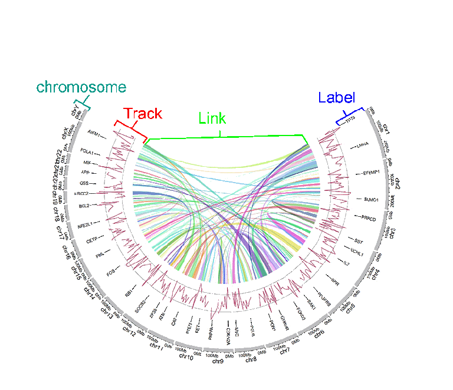
一个典型的Circos图的不同"Track"
2.输入数据格式
要使用 shinyCircos-V2.0，必须以正确的格式准备输入数据。
我们建议以".csv"格式上传输入文件，因为".csv"文件具有明确的格式，常用于数据存储和分析。shinyCircos-V2.0的所有输入数据前三列的顺序都是固定的，分别为chr（染色体）、start（基因组区间的起始位置）、end（基因组区间的终止位置）。
2.1 染色体数据（用于定义 Circos 图的染色体）
染色体数据是绘图时必不可少的输入数据，它定义了Circos图的染色体。 shinyCircos-V2.0接受两种类型的染色体数据，分别是General chromosome data和Cytoband chromosome data。
2.1.1 包含3列数据的General chromosome data
General chromosome data包含顺序固定的三列数据，分别是chr（染色体）、start（基因组区间的起始位置）、end（基因组区间的终止位置）。列名不是必需的，任何R语言中合法的列名都可以。但我们建议您使用规范的列名，参考示例数据中的列名。如下图所示：
| chr | start | end |
|---|---|---|
| chr1 | 1 | 249250621 |
| chr2 | 1 | 243199373 |
| chr3 | 1 | 198022430 |
| chr4 | 1 | 191154276 |
| chr5 | 1 | 180915260 |
| chr6 | 1 | 171115067 |
一组示例的General chromosome data

使用General chromosome data创建的Circos图的染色体条带的默认颜色为灰色。
一个使用General chromosome data绘制的Circos图
2.1.2 包含5列数据的Cytoband chromosome data
Cytoband chromosome data包含顺序固定的五列数据，分别是chr（染色体）、start（基因组区间的起始位置）、end（基因组区间的终止位置）、细胞遗传学带的名称和 Giemsa 染色结果。列名不是必需的，任何R语言中合法的列名都可以。但我们建议您使用规范的列名，参考示例数据中的列名。如下图所示：
| chr | start | end | value1 | value2 |
|---|---|---|---|---|
| chr1 | 1 | 2300000 | p36.33 | geng |
| chr1 | 2300000 | 5400000 | p36.32 | gpos25 |
| chr2 | 1 | 4400000 | p25.3 | geng |
| chr2 | 4400000 | 7100000 | p25.2 | gpos50 |
| chr3 | 1 | 2800000 | p26.3 | gpos50 |
| chr3 | 2800000 | 4000000 | p26.2 | geng |
一组示例的Cytoband chromosome data
当用户使用Cytoband chromosome data时，将创建一个带有 Ideogram 染色体的 Circos 图。
一个使用Cytoband chromosome data创建的 Circos 图
2.2 Track data（用于展示在 Circos 图不同"Track"中的数据）
用户可以上传一个或多个输入数据集并展示在 Circos 图的不同Track中。不同类型的数据集可用于创建不同类型的图形。所有Track data的前三列的顺序是固定的，分别是chr（染色体）、start（基因组区间的起始位置）、end（基因组区间的终止位置）。
2.2.1 用于绘制bar plot的Track data
用来绘制柱状图的数据应该至少包含四列数据，分别是chr（染色体）、start（基因组区间的起始位置）、end（基因组区间的终止位置）和表示数据值的第四列。第四列的值必须是数字。前4列的列名不是必需的，任何R语言中合法的列名都可以。
shinyCircos-V2.0可用于绘制两种不同的柱状图，分别是Unidirectional柱状图和Bidirectional柱状图。
| chr | start | end | value |
|---|---|---|---|
| chr1 | 10382554 | 26901963 | 0.374 |
| chr1 | 26901963 | 30511288 | 0.084 |
| chr2 | 2129395 | 9774923 | 0.237 |
| chr2 | 14718126 | 15320740 | 0.529 |
| chr3 | 472933 | 7160480 | 0.477 |
| chr3 | 10972902 | 11789212 | 0.636 |
用于绘制Unidirectional柱状图的输入数据
对于Unidirectional柱状图，第四列的最小值将被用作所有柱状图的起点，如下图所示。默认情况下，所有柱子的颜色由shinyCircos随机分配。
一个包含Unidirectional柱状图的Circos图
对于Unidirectional柱状图，还可以在输入数据中添加一个额外的“color”列，用来在 shinyCircos-V2.0 中设置不同柱子的颜色。 “color”列的名称必须明确地指定为“color”。
要为包含多个分组的数据指定颜色，应将包含分组信息的第5列命名为“color”。 用户还需要提供一个字符串来指定每个组的颜色， 例如'a:red;b:green;c:blue'，其中'a b c'代表不同的数据组。 没有分配颜色的数据组的颜色将被设置为“grey”。
| chr | start | end | value | color |
|---|---|---|---|---|
| chr1 | 2321390 | 22775301 | -0.525358698 | a |
| chr1 | 43812694 | 44287183 | 0.101162224 | a |
| chr4 | 58783476 | 66246991 | -0.866641798 | a |
| chr4 | 77375595 | 79033629 | -0.313168927 | b |
| chr9 | 5488989 | 10117165 | -0.309662277 | c |
| chr9 | 14069596 | 45956401 | 0.111702254 | c |
用于绘制包含不同颜色的柱状图的输入数据
一个包含不同颜色柱状图的Circos图
对于双向柱状图，包含数据值的第4列将根据边界值被分为两组。默认边界值为零，可由用户修改。
| chr | start | end | value |
|---|---|---|---|
| chr1 | 5622039 | 9110831 | 0.095 |
| chr1 | 5622039 | 9110831 | -0.405 |
| chr2 | 13669568 | 16275459 | 0.936 |
| chr2 | 13669568 | 16275459 | -0.436 |
| chr3 | 4777699 | 8367346 | 0.174 |
| chr3 | 4777699 | 8367346 | -0.326 |
用于绘制Bidirectional柱状图的输入数据
一个包含Bidirectional柱状图的Circos图
2.2.2 用于绘制line的Track data
绘制折线图的输入数据应至少包含四列，并按固定顺序排列。第一列定义了多个基因组区域的染色体。第二和第三列定义了这些基因组区域的start和end坐标。 第四列是所有基因组区域的数据值。第四列必须是数字。前4列的列名不是必需的，任何R语言中合法的列名都可以。 默认情况下，所有线条的颜色由shinyCircos随机分配。
| chr | start | end | value |
|---|---|---|---|
| chr1 | 788538 | 5571920 | 0.309 |
| chr1 | 6704086 | 10962288 | -0.075 |
| chr2 | 5331353 | 17190915 | 0.129 |
| chr2 | 27214061 | 37578483 | -0.796 |
| chr3 | 1424915 | 5127305 | -0.413 |
| chr3 | 10792280 | 11980906 | -0.096 |
用于绘制折线图的输入数据
一个包含折线图的Circos图
此外，用户可以在输入数据中添加一个额外的“color”列，用于给同一Track中不同组的折线加上不同的颜色。“color”列的名称必须明确指定为“color”。
| chr | start | end | value | color |
|---|---|---|---|---|
| chr1 | 2306857 | 8605927 | -0.207 | a |
| chr1 | 20851761 | 21889246 | 0.121 | a |
| chr4 | 97627526 | 102877458 | 0.259 | a |
| chr4 | 106904642 | 109386825 | -0.65 | b |
| chr14 | 84253948 | 92430157 | 0.396 | c |
| chr14 | 97757077 | 100917700 | -0.366 | c |
带有“color”列的折线图输入数据
包含不同颜色折线图的Circos图
通过在输入数据中添加多列数据值，可以在同一Track上绘制多条折线。 对于这种类型的输入数据，所有列的列名都不是必需的，任何R语言中合法的列名都可以。从第四列开始的每一列都必须是数字。
| chr | start | end | value1 | value2 |
|---|---|---|---|---|
| chr1 | 294540 | 4666160 | -0.66 | -0.596 |
| chr1 | 17589118 | 18065224 | -0.138 | -0.747 |
| chr2 | 6872874 | 16224260 | -0.77 | -0.403 |
| chr2 | 24936258 | 28070400 | 0.716 | 0.22 |
| chr3 | 503979 | 24719267 | 0.217 | -0.459 |
| chr3 | 24979219 | 43289811 | 0.226 | -0.185 |
用于绘制多条折线图的输入数据
包含多条折线图的Circos图
2.2.3 用于绘制point的Track data
用于绘制散点图的输入数据和用于绘制折线图的输入数据格式类似。
用于绘制散点图的输入数据应至少包含四列，并按固定顺序排列。第一列定义了多个基因组区域的染色体。第二和第三列定义了这些基因组区域的 start 和 end 坐标。第四列是所有基因组区域的数据值。 请注意，第四列必须是数字。前4列的名字不是必需的，可以是 R 中任何合法的名字。默认情况下，所有点的颜色由 shinyCircos 随机分配。
| chr | start | end | value |
|---|---|---|---|
| chr1 | 1769292 | 1796134 | 0.339 |
| chr1 | 4881594 | 5495466 | 1.005 |
| chr2 | 5800619 | 8815540 | 0.088 |
| chr2 | 10440452 | 10893876 | -0.891 |
| chr3 | 41265 | 7536287 | -0.1 |
| chr3 | 9209200 | 12874260 | -0.032 |
一个用于绘制散点图的输入数据
一个包含散点图的Circos图
用户还可以在输入数据中添加一个额外的“cex”列来控制点的大小。“cex”列应该是正数。“cex”列的名称必须明确指定为“cex”。
| chr | start | end | value | cex |
|---|---|---|---|---|
| chr1 | 1326341 | 1845331 | -0.374 | 0.5 |
| chr1 | 9901462 | 15656953 | -0.321 | 0.3 |
| chr2 | 17619104 | 25624262 | -0.194 | 0.6 |
| chr2 | 26946941 | 27889388 | 0.27 | 0.6 |
| chr3 | 1720430 | 4389146 | -0.319 | 0.6 |
| chr3 | 6104592 | 7216808 | 0.315 | 0.6 |
带有“cex”列的散点图输入数据
具有不同大小的点的散点图
类似地，用户还可以在输入数据中添加一个额外的“color”列，用来控制同一轨道上不同点的颜色。“color”列的名称必须明确指定为“color”。
| chr | start | end | value | color |
|---|---|---|---|---|
| chr1 | 42002814 | 45209039 | -0.253 | a |
| chr4 | 92963013 | 96656317 | -0.148 | a |
| chr9 | 8290596 | 22658143 | -0.598 | c |
| chr9 | 24382136 | 34055254 | 0.279 | c |
| chrY | 30359053 | 32853733 | -0.286 | d |
| chrY | 34769699 | 39644200 | 0.343 | d |
带有“color”列的散点图输入数据
具有不同颜色的点的散点图
此外，用户还可以在输入数据中添加一个额外的“pch”列，以控制同一轨道上不同点的形状。“pch”列的名称必须明确指定为“pch”（pch的不同取值情况如下图）。

R中pch参数定义的不同点的形状
(图片来源：http://coleoguy.blogspot.com/2016/06/symbols-and-colors-in-r-pch-argument.html)
| chr | start | end | value | pch |
|---|---|---|---|---|
| chr1 | 8605110 | 17214753 | 0.208 | 1 |
| chr3 | 121395059 | 124720880 | 0.269 | 1 |
| chr7 | 46299973 | 47301871 | 0.019 | 13 |
| chr7 | 59003737 | 65956990 | -0.403 | 13 |
| chr11 | 128515663 | 132431158 | 0.146 | 16 |
| chr12 | 7434839 | 18272884 | 0.766 | 16 |
带有“pch”列的散点图输入数据
具有不同形状的点的散点图
“cex”、“color”和“pch”列可以同时出现在单个输入数据中。
| chr | start | end | value | pch | cex |
|---|---|---|---|---|---|
| chr1 | 4049230 | 11358879 | -0.59 | 10 | 0.4 |
| chr1 | 18671867 | 29619034 | 0.442 | 10 | 0.7 |
| chr4 | 101737149 | 102799485 | -0.025 | 17 | 0.9 |
| chr7 | 9065662 | 15775923 | 0.174 | 17 | 0.2 |
| chr9 | 32282995 | 33499747 | 0.476 | 18 | 0.7 |
| chr9 | 54414502 | 54804733 | 0.396 | 18 | 0.4 |
带有“pch”、“cex”列的散点图输入数据
具有不同大小和不同形状的点的散点图
| chr | start | end | value | color | cex |
|---|---|---|---|---|---|
| chr1 | 8900700 | 9211013 | -0.6 | a | 0.3 |
| chr1 | 38733680 | 54945292 | 0.233 | a | 1.1 |
| chr5 | 25650709 | 32392960 | 0.409 | b | 0.3 |
| chr5 | 33011156 | 54462250 | -0.245 | b | 1.1 |
| chr7 | 86777790 | 89385025 | 0.006 | b | 0.9 |
| chr7 | 103848396 | 107618696 | -1.093 | b | 1 |
带有“color”、“cex”列的散点图输入数据
具有不同颜色和不同大小的点的散点图
| chr | start | end | value | color | pch |
|---|---|---|---|---|---|
| chr1 | 3768320 | 4851773 | -0.416 | a | 15 |
| chr1 | 5712552 | 10112216 | -0.41 | a | 15 |
| chr10 | 5831619 | 10981299 | 0.299 | b | 15 |
| chr10 | 13728053 | 15927681 | 0.025 | b | 15 |
| chr22 | 22254151 | 36401489 | 0.182 | c | 17 |
| chr22 | 40556634 | 47770670 | -0.011 | c | 17 |
带有“color”、“pch”列的散点图输入数据
具有不同颜色和不同类型的点的散点图
| chr | start | end | value | color | pch | cex |
|---|---|---|---|---|---|---|
| chr1 | 14053524 | 24878326 | -0.498 | a | 1 | 0.9 |
| chr1 | 29640089 | 49313488 | -0.565 | a | 1 | 1 |
| chr4 | 8408012 | 12767180 | -0.108 | b | 4 | 0.4 |
| chr4 | 22963697 | 41682972 | -0.45 | b | 4 | 0.9 |
| chr9 | 51441395 | 53095312 | 0.527 | c | 6 | 1.1 |
| chr9 | 65510881 | 69698456 | 0.127 | c | 6 | 1.1 |
同时带有“color”、“pch”和“cex”列的散点图输入数据
同时具有不同颜色、不同类型和不同大小的点的散点图
同样，我们也可以通过在输入数据中加入多列数据值来绘制多组点图。对于这种类型的输入数据，所有列的名字都不是必需的，可以是 R 中任何合法的名字。从第四列开始的每一列都必须是数字。
| chr | start | end | value1 | value2 |
|---|---|---|---|---|
| chr1 | 7224218 | 16393864 | -0.196 | -0.955 |
| chr1 | 21093451 | 25392112 | 0.128 | 0.275 |
| chr3 | 14909280 | 22502495 | 0.421 | -0.185 |
| chr3 | 24704666 | 26117987 | -0.102 | 0.637 |
| chr4 | 35556750 | 37025119 | 0.063 | 0.848 |
| chr4 | 39947625 | 63436481 | 0.28 | -0.262 |
用于绘制多组散点图的输入数据
包含多组散点图的Circos图
2.2.4 用于绘制ideogram的Track data
ideogram是染色体的图形表示。 在shinyCircos-V2.0中，我们可以在任何Track上绘制ideogram。 用于创建ideogram的输入数据格式与Cytoband chromosome data的格式相同。
| chr | start | end | value1 | value2 |
|---|---|---|---|---|
| chr1 | 1 | 2300000 | p36.33 | gneg |
| chr1 | 2300000 | 5400000 | p36.32 | gpos25 |
| chr2 | 1 | 4400000 | p25.3 | gneg |
| chr2 | 4400000 | 7100000 | p25.2 | gpos50 |
| chr3 | 1 | 2800000 | p26.3 | gpos50 |
| chr3 | 2800000 | 4000000 | p26.2 | gneg |
用于绘制ideogram的输入数据

一个包含单个ideogram轨道的Circos图
2.2.5 用于绘制rect-discrete的Track data
用于绘制rect-discrete的输入数据应仅包含顺序固定的四列。第一列定义了多个基因组区域的染色体。第二和第三列定义了这些基因组区域的 start 和 end 坐标。第四列必须是字符向量。所有四列的名称都不是必需的，任何R语言中合法的列名都可以。
| chr | start | end | group |
|---|---|---|---|
| chr1 | 1465 | 5857186 | b |
| chr1 | 6005405 | 7051583 | c |
| chr3 | 13 | 3831804 | d |
| chr3 | 3989861 | 11612588 | g |
| chr5 | 56 | 2698252 | h |
| chr5 | 2719598 | 9370038 | c |
用于绘制rect-discrete的输入数据
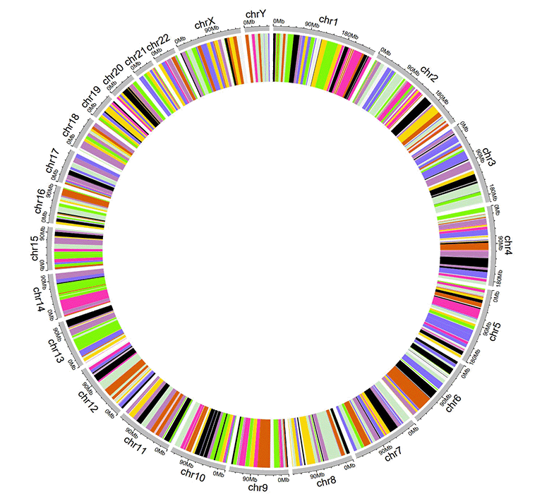
一个包含rect-discrete的Circos图
2.2.6 用于绘制rect-gradual的Track data
用于绘制rect-gradual的输入数据应仅包含顺序固定的四列。第一列定义了多个基因组区域的染色体。第二和第三列定义了这些基因组区域的start和end坐标。第四列是所有基因组区域的数据值。第四列必须是数字。所有四列的名称都不是必需的，任何R语言中合法的列名都可以。
| chr | start | end | value |
|---|---|---|---|
| chr1 | 1 | 6657591 | 0.034 |
| chr1 | 9792529 | 20706145 | -0.527 |
| chr3 | 651 | 27839332 | -0.532 |
| chr3 | 28591880 | 29683518 | -0.156 |
| chr5 | 407 | 16490429 | 0.281 |
| chr5 | 17056645 | 32303717 | 0.485 |
用于绘制rect-gradual的输入数据
一个包含rect-gradual的Circos图
2.2.7 用于绘制heatmap-discrete的Track data
用于绘制离散型热图的输入数据应包含≥4列。第一列定义了多个基因组区域的染色体。第二和第三列定义了这些基因组区域的start和end 坐标。其余的每一列都应该是一个字符向量。所有列的列名都不是必需的，任何R语言中合法的列名都可以。
| chr | start | end | group1 | group2 | group3 | group4 | group5 | group6 | group7 | group8 | group9 | group10 |
|---|---|---|---|---|---|---|---|---|---|---|---|---|
| chr1 | 20621957 | 21209624 | d | a | a | e | e | c | d | g | g | d |
| chr1 | 42967726 | 53028972 | f | b | h | b | g | c | b | h | h | d |
| chr3 | 17138030 | 40796035 | f | h | c | f | a | a | g | h | h | h |
| chr3 | 57219142 | 60650338 | g | b | g | f | b | g | f | f | b | e |
| chr5 | 8910650 | 10080670 | f | c | e | c | b | e | h | b | a | g |
| chr5 | 13535538 | 32715550 | h | h | h | e | d | c | e | b | h | c |
用于绘制离散型热图的输入数据
一个包含离散型热图的Circos图
2.2.8 用于绘制heatmap-gradual的Track data
用于绘制连续型热图的输入数据应包含≥4列。第一列定义了多个基因组区域的染色体。第二和第三列定义了这些基因组区域的start和end坐标。其余的每一列都应该是一个数字向量。所有列的列名都不是必需的，任何R语言中合法的列名都可以。
| chr | start | end | value1 | value2 | value3 | value4 | value5 | value6 | value7 | value8 | value9 | value10 |
|---|---|---|---|---|---|---|---|---|---|---|---|---|
| chr1 | 20621957 | 21209624 | -0.672 | -0.271 | -0.001 | 0.486 | -0.986 | -0.37 | 0.48 | 0.38 | 0.158 | 0.108 |
| chr1 | 42967726 | 53028972 | -0.147 | 0.387 | 1.332 | 0.182 | 0.16 | -0.132 | 0.234 | -0.089 | -0.918 | 0.397 |
| chr3 | 17138030 | 40796035 | 0.046 | 0.028 | -0.691 | -0.341 | 1.011 | -0.242 | -0.027 | -0.273 | 0.276 | -1.028 |
| chr3 | 57219142 | 60650338 | -0.514 | 0.429 | 0.29 | -0.356 | -0.025 | 0.537 | -0.368 | 0.486 | 0.392 | -0.085 |
| chr5 | 8910650 | 10080670 | 0.175 | -0.855 | 0.934 | -0.914 | 0.879 | -0.181 | -0.512 | -0.074 | 0.302 | 0.04 |
| chr5 | 13535538 | 32715550 | 0.088 | 0.005 | 1.005 | -0.076 | -0.007 | 0.371 | 0.494 | -0.236 | 0.219 | -0.422 |
用于绘制连续型热图的输入数据
一个包含连续型热图的Circos图
2.2.9 用于绘制stack-point的Track data
使用shinyCircos-V2.0，我们还可以创建堆栈点图表（stack point）。输入数据应仅包含顺序固定的四列。第一列定义了多个基因组区域的染色体。第二和第三列定义了这些基因组区域的start和end坐标。第四列包含不同分组的数据值。同一组的数据值将绘制在同一行上。所有列的列名都不是必需的，可以是R语言中任何合法的列名。
| chr | start | end | stack |
|---|---|---|---|
| chr1 | 11589909 | 40133642 | a |
| chr1 | 52614734 | 59580026 | a |
| chr5 | 28358375 | 28943627 | a |
| chr5 | 48623024 | 64086871 | a |
| chr1 | 37080716 | 41662004 | b |
| chr1 | 87453098 | 89776607 | b |
用于绘制stack-point的输入数据
一个包含堆叠的点的单个轨道的Circos图
2.2.10 用于绘制stack-line的Track data
同样，我们也可以使用shinyCircos-V2.0创建堆栈的折线图。其输入数据格式与堆栈的散点图的输入数据格式相同。
| chr | start | end | stack |
|---|---|---|---|
| chr1 | 20646359 | 46383846 | a |
| chr5 | 2723623 | 5392944 | a |
| chr9 | 4943376 | 8560799 | a |
| chr13 | 33868717 | 71744746 | a |
| chr1 | 16051196 | 33970939 | b |
| chr5 | 89644 | 46679748 | b |
用于绘制stack-line的输入数据
一个包含堆叠的折线的单个轨道的Circos图
2.3 Label data（用于标记Track data中的元素）
label data主要用于注释指定轨道中的元素。输入数据应包含四列或五列，如下表所示。
包含四列数据的label data用于绘制单一颜色的label。默认情况下，使用的颜色是黑色，用户可以使用shinyCircos中的功能模块指定颜色。所有四列的列名都不是必需的，任何R语言中合法的列名都可以。
| chr | start | end | label |
|---|---|---|---|
| chr1 | 3698046 | 3736201 | TP73 |
| chr1 | 156114670 | 156140089 | LMNA |
| chr5 | 42423775 | 42721878 | GHR |
| chr5 | 150113839 | 150155859 | PDGFRB |
| chr9 | 116153792 | 116402321 | PAPPA |
| chr9 | 21967752 | 21975133 | CDKN2A |
包含4列数据的label data
一个包含文本label的 Circos 图
包含五列数据的label data可以用于绘制不同颜色的label，用户需要提供一个额外的列，其值为颜色值。这种情况下，列名不是必需的，所有5列的列名可以是R语言中任何合法的列名。第五列的值必须是有效的颜色名字。
| chr | start | end | label | color |
|---|---|---|---|---|
| chr1 | 3698046 | 3736201 | TP73 | red |
| chr1 | 156114670 | 156140089 | LMNA | #FF000080 |
| chr5 | 42423775 | 42721878 | GHR | blue |
| chr5 | 150113839 | 150155859 | PDGFRB | #00FF00 |
| chr9 | 116153792 | 116402321 | PAPPA | blue |
| chr9 | 21967752 | 21975133 | CDKN2A | green |
带有“color”列的label data
带有不同颜色label的一个示例Circos图
2.4 Links data
用于绘制Links的输入数据应包含六列或者七列。前三列定义了染色体、多个基因组区域的开始和结束坐标。输入数据的第4-6列定义了另一组基因组区域的染色体、开始和结束坐标。shinyCircos将在输入数据的同一行中的两个基因组区域之间创建link。默认情况下，所有link的颜色由shinyCircos随机分配。
对于包含6列的links输入数据，列名不是必需的，任何R语言中合法的列名都可以。
对于包含7列的links输入数据，列名是必需的。前6列的列名可以是R语言中任何合法的列名。第7列的列名必须明确指定为“color”。
| chr1 | start1 | end1 | chr2 | start2 | end2 |
|---|---|---|---|---|---|
| chr20 | 37720821 | 47419255 | chr5 | 162124929 | 168434522 |
| chr8 | 76179361 | 83302661 | chr1 | 162049212 | 213797379 |
| chr2 | 38375277 | 49805216 | chr11 | 19060895 | 36294068 |
| chr2 | 120255288 | 134792772 | chr13 | 62362083 | 71502856 |
| chr4 | 95199225 | 102508113 | chr13 | 16327889 | 24910342 |
| chr15 | 83769167 | 83992136 | chr10 | 83790329 | 119443216 |
一个示例的link输入数据
一个包含links的Circos图
对于包含7列的links输入数据，第7列“color”列可以是字符向量或数值向量。
| chr1 | start1 | end1 | chr2 | start2 | end2 | color |
|---|---|---|---|---|---|---|
| chr20 | 37720821 | 47419255 | chr5 | 162124929 | 168434522 | c |
| chr8 | 76179361 | 83302661 | chr1 | 162049212 | 213797379 | c |
| chr2 | 38375277 | 49805216 | chr11 | 19060895 | 36294068 | b |
| chr2 | 120255288 | 134792772 | chr13 | 62362083 | 71502856 | a |
| chr4 | 95199225 | 102508113 | chr13 | 16327889 | 24910342 | a |
| chr15 | 83769167 | 83992136 | chr10 | 83790329 | 119443216 | b |
一个包含离散型“color”列的links输入数据
一个包含不同颜色links的Circos图，links的颜色由分组决定
| chr1 | start1 | end1 | chr2 | start2 | end2 | color |
|---|---|---|---|---|---|---|
| chr20 | 37720821 | 47419255 | chr5 | 162124929 | 168434522 | 217 |
| chr8 | 76179361 | 83302661 | chr1 | 162049212 | 213797379 | 7 |
| chr2 | 38375277 | 49805216 | chr11 | 19060895 | 36294068 | 206 |
| chr2 | 120255288 | 134792772 | chr13 | 62362083 | 71502856 | 27 |
| chr4 | 95199225 | 102508113 | chr13 | 16327889 | 24910342 | 189 |
| chr15 | 83769167 | 83992136 | chr10 | 83790329 | 119443216 | 161 |
一个包含连续型“color”列的links输入数据
一个带有渐变颜色links的示例 Circos 图
3 在线或在本地计算机上使用shinyCircos
3.1 在线使用shinyCircos-V2.0
在线使用shinyCircos-V2.0的网址是https://venyao.xyz/shinyCircos/。
3.2 shinyCircos-V2.0的用户界面
shinyCircos-V2.0应用程序包含8个主菜单：“shinyCircos-V2.0”，“Data Upload”，“Circos Parameters”，“Circos Plot”，“Gallery”，“Help”，“About”和“Contact”（见下图）。“shinyCircos-V2.0”菜单列出了Circos图的基本介绍。
shinyCircos-V2.0的主页面
“Data Upload”菜单允许用户上传输入数据或是载入示例数据（如下图）。

“Data Upload”界面
您可以同时上传多个数据，也可以分别上传。每次上传输入数据后，请将上传的数据从“Candidate area”拖到“Chromosome data”或“Track data”或“Label data”或“Links data”框中，然后点击“Save uploaded data”按钮保存数据。然后，您可以继续上传数据或点击“Submit the uploaded datasets”提交数据。

从本地磁盘上传输入数据
用户还可以选择加载存储在shinyCircos中的示例数据集。shinyCircos中总共存储了10个不同的示例数据集。
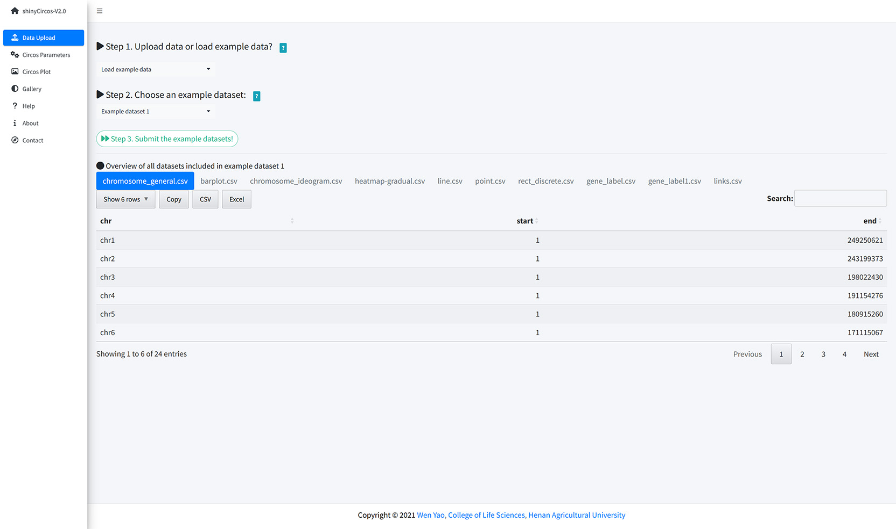
从 shinyCircos 加载示例数据
“Circos Parameters”界面为用户提供了查看所有上传数据集内容的功能，以及为每个输入数据集设置参数的功能。输入数据集被归为四组，分别是Chromosome data、Track data、Label data和Links data。每个输入数据集的文件名显示在此页面的某一行中。用户可以通过点击相应文件名旁边的眼睛图标来查看每个数据集的内容。对于每个输入数据集，用户需要设置绘图类型和其他绘图参数。每行末尾设计了一个小齿轮，供用户设置绘图参数。

shinyCircos-V2.0的“Circos Parameters”界面
将所有输入数据集和参数提交到shinyCircos服务器后，shinyCircos-V2.0将绘制一个Circos图并展示在“Circos Plot”页面中。绘制的Circos图可以下载为PDF或SVG格式的文件。在“Advanced options”按钮中有一些用于调整所绘制的Circos图外观的高级参数。

shinyCircos-V2.0的“Circos Plot”界面
“Gallery”界面展示了使用shinyCircos-V2.0创建的30个示例Circos图。用于创建每个示例Circos图的输入数据也提供了下载链接。前十个示例Circos的输入数据和“Data Upload”界面提供的example data是一样的。
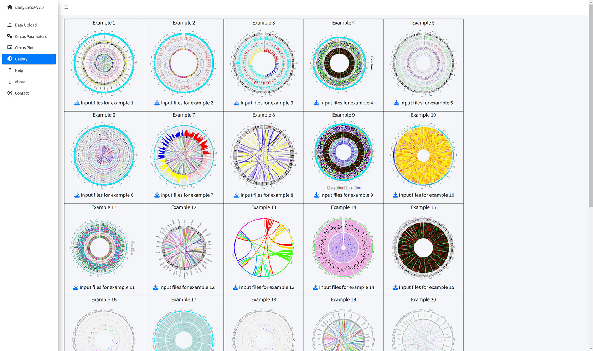
shinyCircos-V2.0的“Gallery”界面
“Help”界面提供了shinyCircos-V2.0的帮助手册。
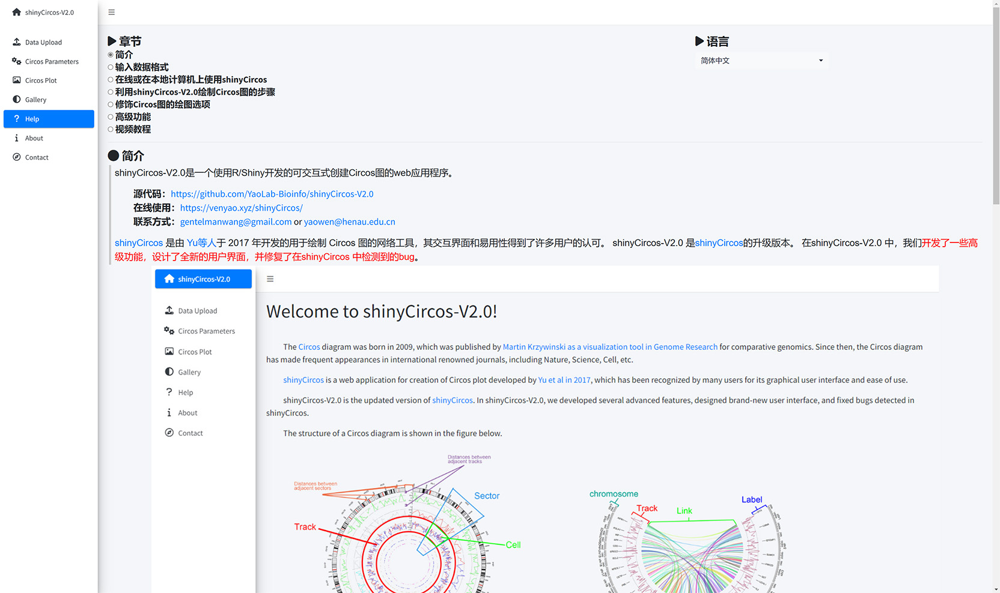
shinyCircos-V2.0的“Help”界面
shinyCircos-V2.0使用的R包等信息展示在“About”页面中。

shinyCircos-V2.0的“About”界面
“Contact”页面列出了一些联系信息。

shinyCircos-V2.0的“Contact”界面
3.3 在个人电脑上安装使用shinyCircos-V2.0
用户也可以选择在个人电脑(Windows、Mac或Linux)上安装和运行shinyCircos-V2.0，而无需将数据上传到在线服务器。shinyCircos-V2.0是跨平台的应用，即shinyCircos-V2.0可以安装在任何具有可用R环境的平台上。shinyCircos-V2.0的安装包括三个步骤。
步骤1：安装R和RStudio
请查看CRAN (https://cran.r-project.org/)以了解R的安装过程。请查看(https://www.rstudio.com/)以了解RStudio的安装过程。
步骤2：安装R/Shiny包和shinyCircos-V2.0需要的其他R包
打开RStudio启动一个R会话并运行以下代码行 ：
# try an http CRAN mirror if https CRAN mirror doesn't work install.packages("shiny") install.packages("circlize") install.packages("bs4Dash") install.packages("DT") install.packages("RColorBrewer") install.packages("shinyWidgets") install.packages("data.table") install.packages("shinyBS") install.packages("sortable") install.packages("shinyjqui") install.packages("shinycssloaders") install.packages("colourpicker") install.packages("gridBase") install.packages("BiocManager") BiocManager::install("ComplexHeatmap")确保以上包都正确地安装在R中。
步骤3：运行shinyCircos-V2.0应用程序
使用RStudio启动R会话并运行以下代码行：
shiny::runGitHub("shinyCircos-V2.0", "YaoLab-Bioinfo")此命令将从GitHub下载shinyCircos-V2.0的源代码到您计算机的临时目录中，然后在web浏览器中启动shinyCircos-V2.0应用程序。一旦网页浏览器关闭，下载的shinyCircos-V2.0代码将从您的电脑中删除。下次在RStudio中运行这个命令时，它将再次从GitHub下载shinyCircos-V2.0的源代码到一个临时目录。这个过程十分麻烦，因为从GitHub下载shinyCircos-V2.0的代码需要一些时间。
建议用户将shinyCircos-V2.0的源代码从GitHub下载到您电脑的一个固定目录，如Windows上的“E:\apps”，按照下图所示的步骤，一个名为“shinyCircos-V2.0-master.zip”的zip文件将下载到您的计算机中。将此文件移动到“E:\apps”并解压缩此文件。然后在“E:\apps”中会生成一个名为“shinyCircos-V2.0-master”的目录。脚本“server.R”和“ui.R”可以在“E:\apps\ shinyCircos-V2.0-master”中找到。然后，您可以通过在RStudio中运行以下几行脚本来启动shinyCircos-V2.0应用程序。
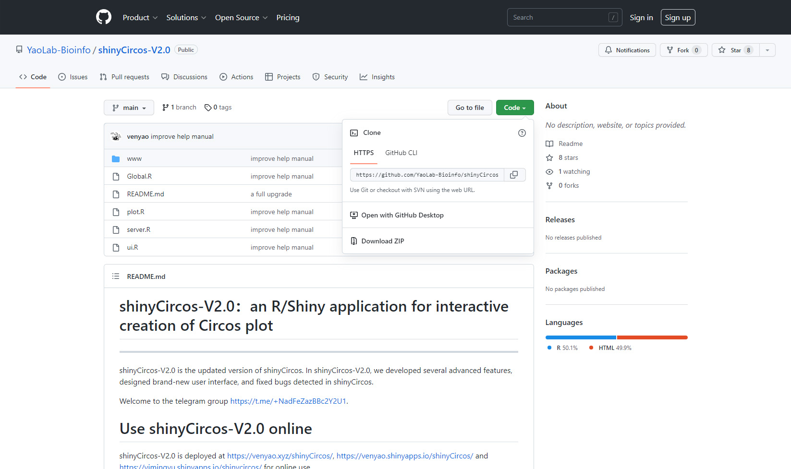
从GitHub下载源代码
library(shiny) runApp("E:/apps/shinyCircos-V2.0-master", launch.browser = TRUE)然后，shinyCircos-V2.0应用程序将在计算机的默认网页浏览器中打开。
4 利用shinyCircos-V2.0绘制Circos图的步骤
要使用shinyCircos-V2.0制作 Circos 图，用户必须准备并上传定义特定基因组染色体信息的文件，以及要沿基因组展示的其他输入数据。在本节中，我们将演示使用示例数据集创建Circos图的所有基本步骤。
4.1 利用shinyCircos-V2.0绘制Circos图的基本步骤
步骤1：准备并上传定义基因组长度的“Chromosome data”
染色体数据对于shinyCircos-V2.0是必不可少的，因为它定义了Circos图的染色体。染色体数据的详细格式在输入数据格式部分中有描述。
使用 shinyCircos-V2.0 的“Data Upload”菜单中上传数据的功能模块，将名为“chromosome_general.csv”的文件从本地磁盘上传到shinyCircos-V2.0，如下图所示。
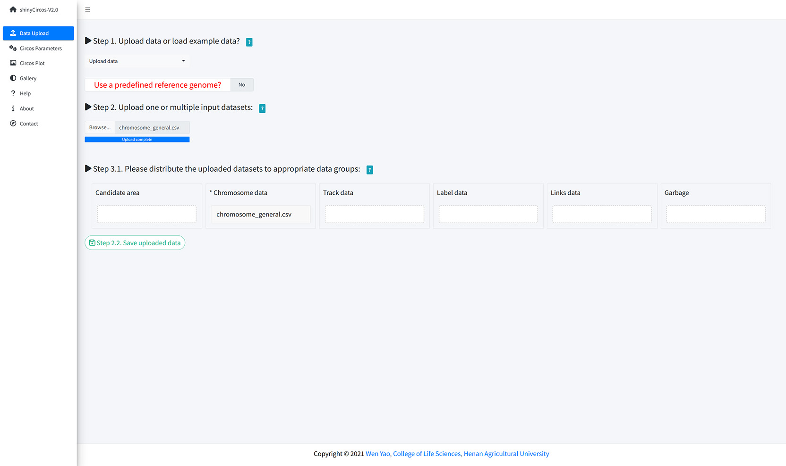
上传染色体数据
步骤2：上传一个或多个输入数据集以展示在不同的Tracks中
除了染色体数据，用户还可以上传一个或多个其它类型的输入数据，以展示在Circos图的不同Tracks中。制作不同类型图形的输入文件的详细格式在“2 输入数据格式”部分有详细说明。 现在我们将两个名为“barplot.csv”和“line.csv”的文件从本地磁盘上传到 shinyCircos-V2.0中。两个数据集都需要分发到“Track data”框中。记得及时保存上传的数据。
步骤3：为每个输入数据集设置“Track index”和绘图类型
默认情况下，输入数据集的Track index由其上传顺序决定。所有输入数据集的默认绘图类型都是“point”。在这里，我们需要将“barplot.csv”的绘图类型设置为“bar”，并将“line.csv”的绘图类型设置为“line”。

在shinyCircos-V2.0的“Circos Parameters”页面设置Track index和plot type。
步骤4：点击“Submit!”按钮绘制图形
当所有输入数据集成功上传到shinyCircos-V2.0，并设置了正确track index和绘图类型后，我们需要单击“Circos Parameters” 菜单底部的“Step 4. Submit the plot parameters to make the Circos plot!”按钮，开始绘制Circos图形。 默认情况下，在绘制图形时，shinyCircos-V2.0将使用随机颜色或者预定义的颜色。
4.2 通过替换一个或多个输入数据集来更新 Circos 图
Circos图的一个Track常由单个输入数据定义。典型的Circos图通常包含由多个输入数据定义的多个轨道。在绘制出一个Circos图的时候，用户可能想要替换这些输入文件中的一个或多个，从而更新Circos图的某些Track，而无需重新创建整个Circos图。
例如，我们想通过将 Track2 的“line.csv”替换为新的输入文件“rect_discrete.csv”来创建包含离散矩形的Circos图。
为此，我们可以跳转到“Data Upload”页面，将“rect_discrete.csv”上传并分发到“Track data”框中，然后把“line.csv”文件移动到“Garbage”框。之后，我们需要点击“Step 2.2. Save uploaded data”按钮保存上传的数据。同时，我们需要将新上传的数据的绘图类型从“line”更改为“rect_discrete”。
最后，我们需要点击“Circos Parameters”页面底部的“Step 4. Submit the plot parameters to make the Circos plot!” 按钮以更新Circos图。
4.3 以PDF或SVG格式下载创建的Circos图形
生成Circos图形后，用户可以使用“Circos Plot”页面上方的“Download PDF-file”和“Download SVG-file”模块下载PDF或SVG格式的Circos图(如下图)。默认情况下，下载的两个文件的名字分别为“shinyCircos.pdf”和“shinyCircos.svg”。 下载的PDF文件“shinyCircos.pdf”可以在Adobe Acrobat中打开，下载的SVG文件“shinyCircos.svg”可以在Google Chrome浏览器中打开。
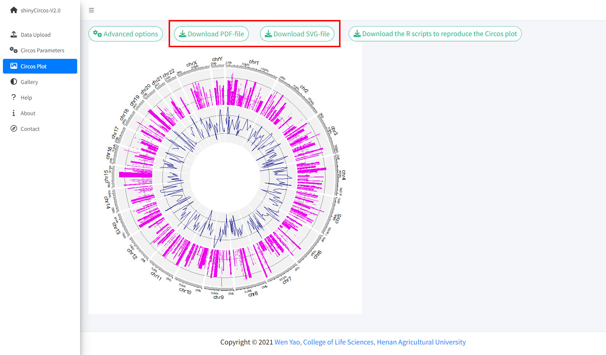
下载绘制的Circos图形的功能模块
4.4 利用shinyCircos-V2.0绘制复杂Circos图的基本步骤
使用shinyCircos-V2.0可以创建10种不同类型的图形，包括point, line, bar, stack-line,stack-point,rect-gradual, rect-discrete, heatmap-gradual, heatmap-discrete和ideogram。要创建一个Circos图，至少需要一个输入数据文件，即定义基因组长度的基因组数据文件。
在这一节中，我们将展示绘制复杂Circos图的基本步骤（如下图）。
步骤1：上传所有输入数据并将每个数据分发到适当的数据类型选择框中

上传所有输入数据并将每个输入数据分发到适当的数据类型选择框中
步骤2：为每个输入数据设置绘图类型和Track index

为每个输入数据设置绘图类型和Track index
步骤3：设置所有Track的绘图参数

为绘制柱状图设置参数
步骤4：设置高级参数

“Circos Plot”页面的“Advanced options”按钮

shinyCircos-V2.0 中设计的高级绘图参数

包含Track索引和图例的Circos图
步骤5：高亮一个或多个基因组区域

shinyCircos-V2.0中用于高亮一个或多个基因组区域的功能模块
一定要点击“SAVE”按钮输入需要高亮的基因组区域并检测输入数据格式是否有问题。对于所设置的所有高级参数，需要点击“Update”按钮，使所有设置的高级选项生效。
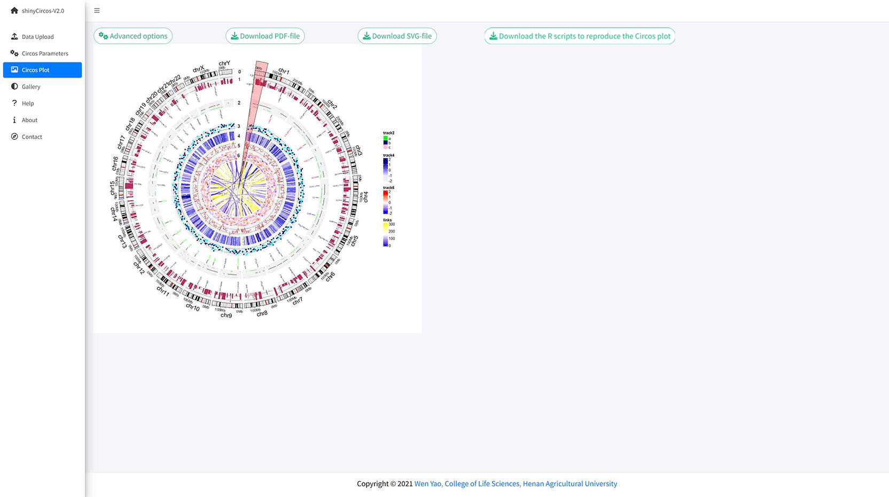
高亮了一个用户输入的基因组区域的circos图
5 修饰Circos图的绘图选项
“Circos Parameters”页面的每行数据的右侧有一个小齿轮按钮，用户点击后将会弹出一个参数设置的弹出框，可以对很多选项进行个性化设置，比如Track的高度、Track之间的距离、各部分的颜色等等。本节将展示其中一些选项的设置。
5.1 Track高度
默认Track高度为 0.1。调高这个数字可以增加Track的高度。

调整“Track”高度的功能模块
5.2 纵坐标轴
shinyCircos-V2.0现在支持给指定的Track添加Y轴，以显示对应Track所有数据的取值范围。
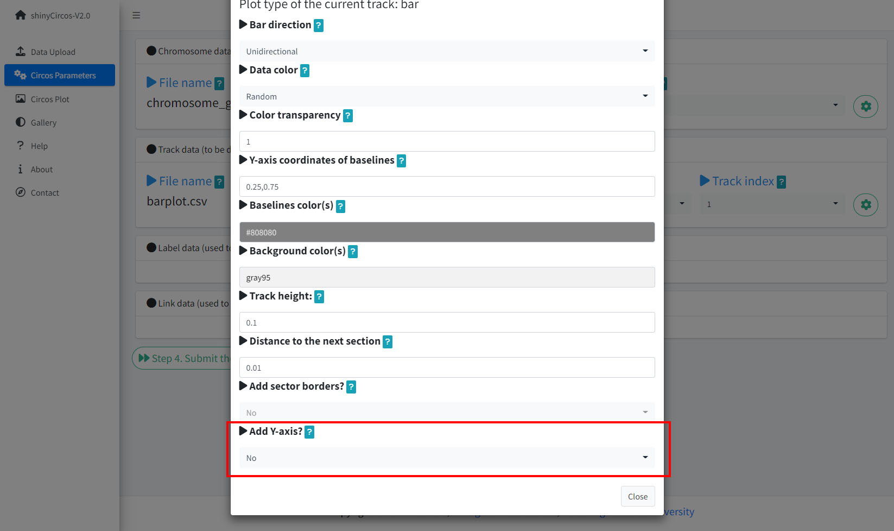
用来添加y坐标轴的功能模块

包含y坐标轴的Circos图
5.3 不同“Track”之间的间距
该参数用于调整相邻Track之间的距离，也可用于调整Track与label data之间的距离，或者Track与links之间的距离。

不同“Track”之间间距的功能模块
不同track之间间距较大的一个Circos图
5.4 “Sector”的边框
shinyCircos-V2.0 还支持为一个或多个“Track”中的sector添加边框。

用来添加“Sector”边框的功能模块

“Sector”带有边框的Circos图
5.5 “Track”的背景颜色
在shinyCircos-V2.0中，用户可以调整不同“Track”的背景颜色，用来区分不同的“Track”。用户可以在弹出窗口中通过“Background color(s)”选项选择或输入适当的颜色来调整“Track”的颜色。
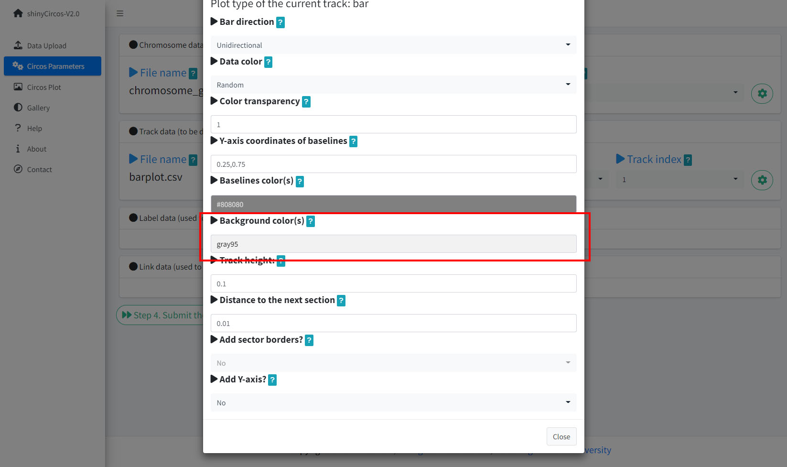
更改“Track”背景颜色的功能模块
一个Circos图，不同的“Track”对应不同的背景颜色
5.6 不同“Sector”之间的间距
此参数用于调整相邻“Sector”之间的间距大小。用户可以输入任意长度的数值向量，输入的向量会被调整为和“Sector”的数目一致。例如，“1”或“1,2,3,1”。第一个数字对应第一个和第二和Sector之间的间距。
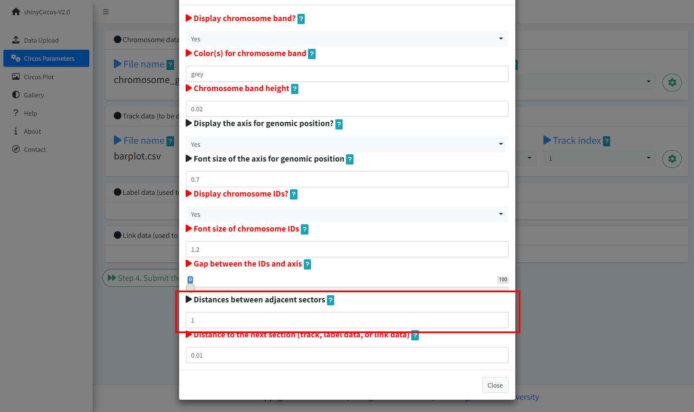
用来设置不同“Sector”之间间距的功能模块

相邻“Sector”之间间距更大的一个Circos图
6 高级功能
与shinyCircos相比，我们在shinyCircos-V2.0中开发了多个高级功能。
6.1 添加图例
当用户绘制了“stack-line”、“stack-point”、“heatmap-gradual”、“heatmap-discrete”、“rect-gradual”和“rect-discrete”这六种类型的“Track”时，用户可以使用“Circos Plot”页面中“Advanced options”按钮中的功能来添加图例。图例可以添加在Circos图的底部或右侧（见下图）。
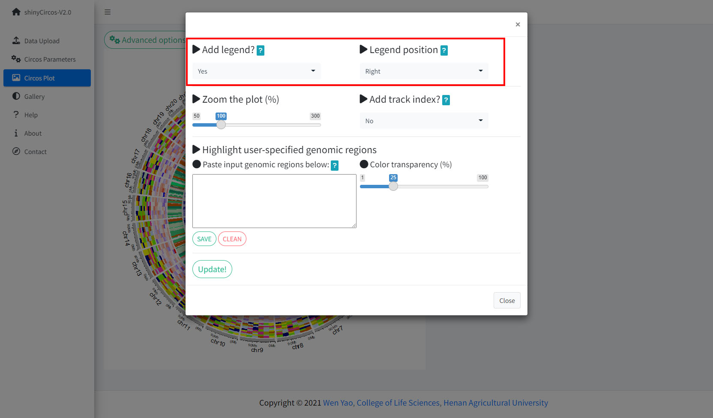
用来给Circos图添加图例的功能模块
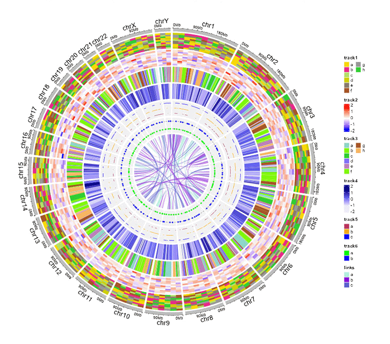
一个包含图例的Circos图
6.2 高亮特定基因组区域
shinyCircos-V2.0支持高亮Circos图中的一个或多个基因组区域。用户可以通过“Circos Plot”页面中的“Advanced options”按钮来使用这个功能。

用来高亮一个或多个基因组区域的功能模块

包含高亮的基因组区域的一个Circos图
6.3 调整图像大小
shinyCircos-V2.0支持使用如下图所示的功能模块来调整Circos图的大小。

用来调整Circos图大小的功能模块
6.4 添加“Track index”
shinyCircos-V2.0支持为Circos plot的所有Track添加索引，以区分不同的Track。 用户可以使用“Circos Plot”页面中“Advanced options”按钮中的功能来添加Track index。
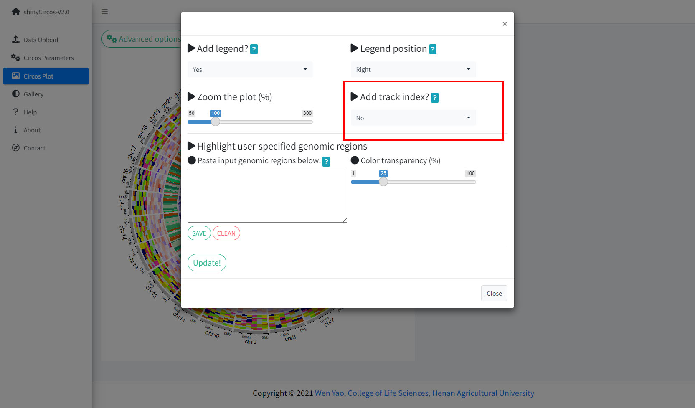
用来添加“Track index”的功能模块
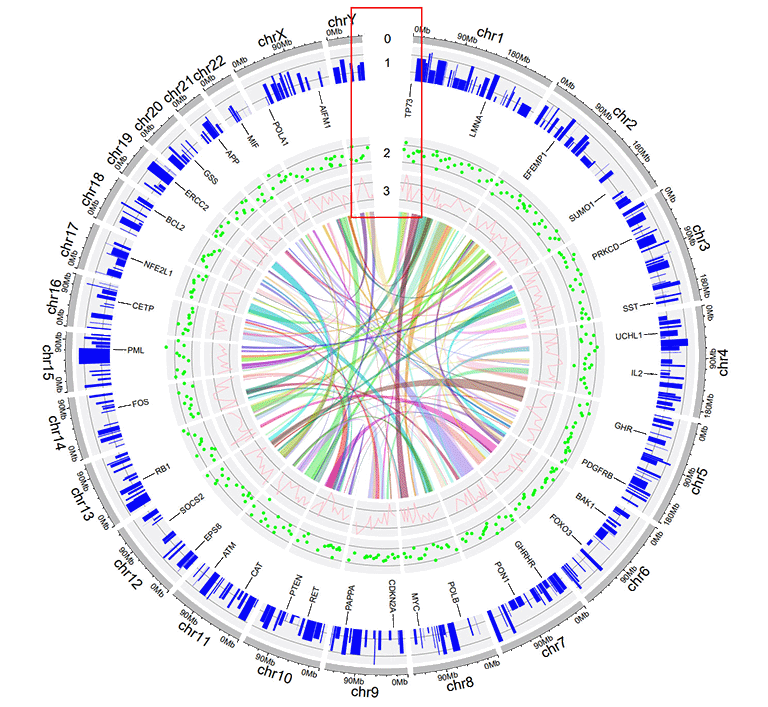
包含“Track index”的Circos图
目录
1.简介
2.输入数据格式
2.1 染色体数据（用于定义 Circos 图的染色体）
2.1.1 包含3列数据的General chromosome data
2.1.2 包含5列数据的Cytoband chromosome data
2.2 Track data（展示在 Circos 图不同"Track"中的数据）
2.2.1 用于绘制bar plot的Track data
2.2.2 用于绘制line的Track data
2.2.3 用于绘制point的Track data
2.2.4 用于绘制ideogram的Track data
2.2.5 用于绘制rect-discrete的Track data
2.2.6 用于绘制rect-gradual的Track data
2.2.7 用于绘制heatmap-discrete的Track data
2.2.8 用于绘制heatmap-gradual的Track data
2.2.9 用于绘制stack-point的Track data
2.2.10 用于绘制stack-line的Track data
2.3 Label data（用于标记Track data中的元素）
2.4 Links data
3 在线或在本地计算机上使用shinyCircos
3.1 在线使用shinyCircos-V2.0
3.2 shinyCircos-V2.0的用户界面
3.3 在个人电脑上安装使用shinyCircos-V2.0
步骤1：安装R和RStudio
步骤2：安装R/Shiny包和shinyCircos-V2.0需要的其他R包
步骤3：运行shinyCircos-V2.0应用程序
4 利用shinyCircos-V2.0绘制Circos图
4.1 利用shinyCircos-V2.0绘制Circos图的基本步骤
步骤1：准备并上传定义基因组长度的"chromosome data"
步骤2：上传一个或多个输入数据集以展示在不同的Tracks中
步骤3：为每个输入数据集设置“Track index”和绘图类型
步骤4：点击“Submit!”按钮绘制图形
4.2 通过替换一个或多个输入数据集来更新 Circos 图
4.3 以PDF或SVG格式下载创建的Circos图形
4.4 利用shinyCircos-V2.0绘制复杂Circos图的基本步骤
步骤1：上传所有输入数据并将每个数据分发到适当的数据类型选择框中
步骤2：为每个输入数据设置绘图类型和Track index
步骤3：设置所有Track的绘图参数
步骤4：设置高级参数
步骤5：高亮一个或多个基因组区域
5 修饰Circos图的绘图选项
5.1 "Track"高度
5.2 纵坐标轴
5.3 不同“Track”之间的间距
5.4 “Sector”的边框
5.5 “Track”的背景颜色
5.6 不同“Sector”之间的间距
6 高级功能
6.1 添加图例
6.2 高亮特定基因组区域
6.3 调整图像大小
6.4 添加"Track index"